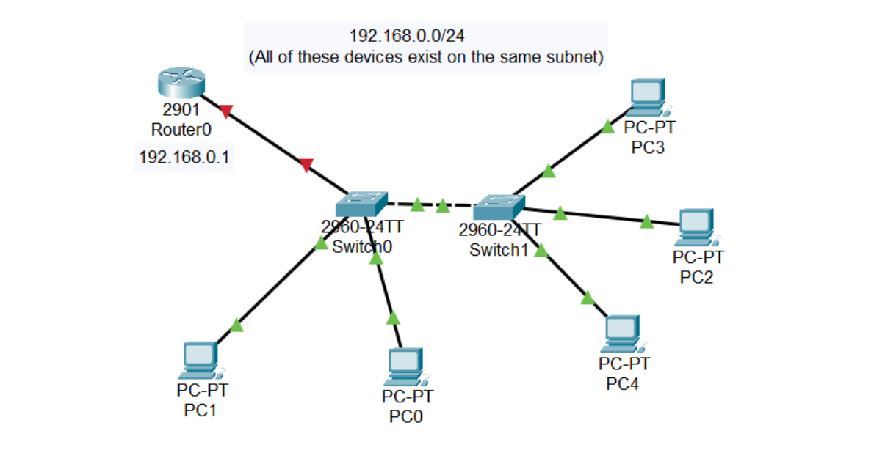
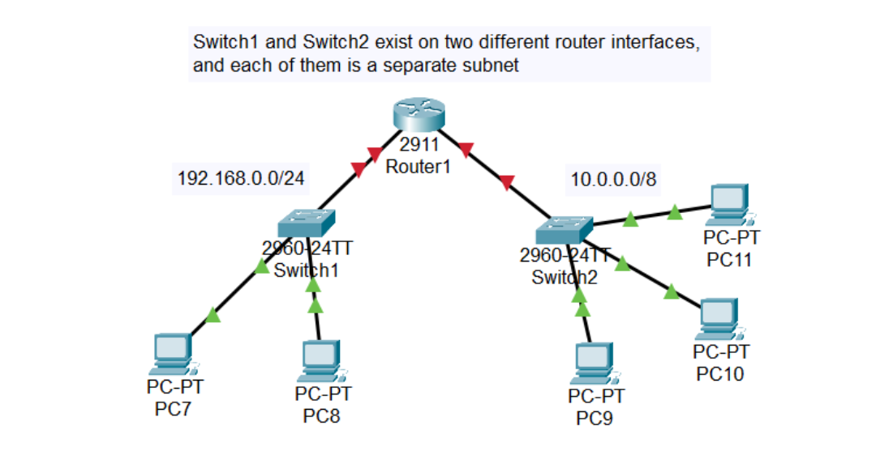
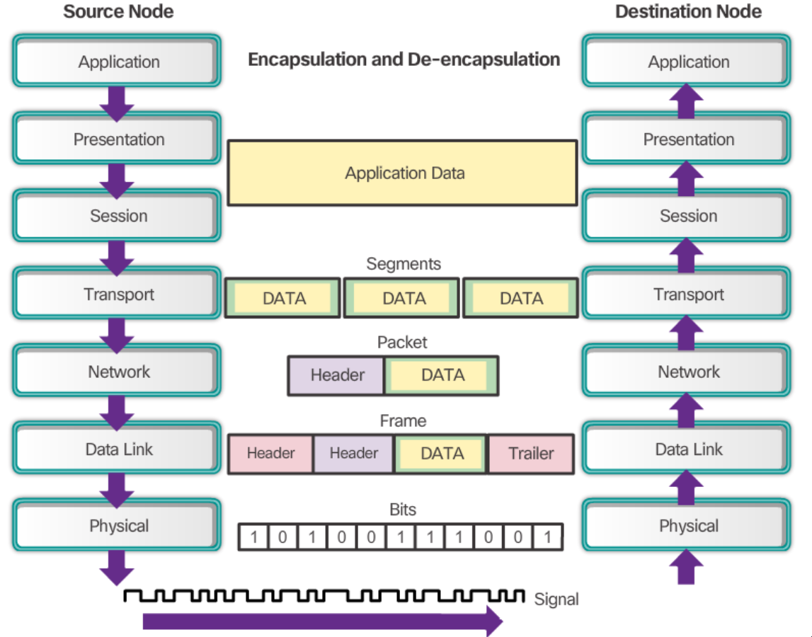
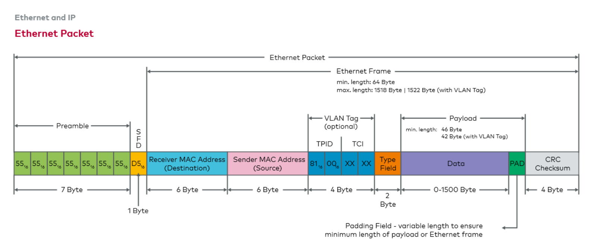
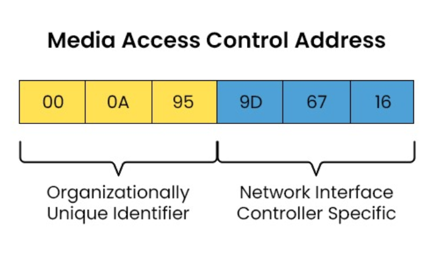

1.2 Ethernet LAN Switching
Introduction
- A LAN: is a network contained in a relatively small area.
- Switches do not separate LANs, routers do.


Ethernet Headers and Trailers
- Ethernet is the layer 2 protocol used in most LANs; unlike WiFi and Bluetooth, it relies on
physical cables rather than electromagnetic waves.
- Layer 2 adds an Ethernet Header and an Ethernet Trailer on packets received
from layer 3 during encapsulation, turning the packet into a Frame.

Ethernet Headers
- Preamble [7 bytes]
- Sequence of 10101010 repeated seven times
- Allows devices to synchronize their receiver clocks
- SFD "Start Frame Delimiter" [1 byte]
- 10101011
- Indicates end of preamble and start of the rest of the frame
- Destination [6 bytes]
- Source [6 bytes]
- Source and Destination MAC addresses
- Type/Length [2 bytes]
- If value ≤ 1500: indicates length of the encapsulated packet in bytes (e.g., 1400 means packet length is
1400 bytes)
- If value ≥ 1536: indicates type of the packet (e.g., 0x0800 for IPv4, 0x86DD for IPv6)
- This field has 2 bytes and can represent up to 65,535 values
Ethernet Trailers
- FCS "Frame Check Sequence" [4 bytes]
- Detects corrupted data via CRC (Cyclic Redundancy Check)
- Minimum Ethernet frame size is 64 bytes
- Minimum Ethernet frame size − (header size + trailer size) = 46 bytes minimum payload
- If payload is less than 46 bytes, padding bytes (zeros) are added

MAC Addresses
- A MAC Address is a 6-byte (48-bit) physical address assigned to a device at manufacture
(burned-in address).
- It is globally unique.
- The first 3 bytes (first 6 hex characters) are the OUI ("Organizationally Unique Identifier")
assigned to the manufacturer.
- The last 3 bytes are unique to the device itself.
- MAC addresses are written as 12 hexadecimal characters.

Every 2 digits of a MAC address represent 1 byte (8 bits). In hexadecimal, 2 digits max out at FF (255), which
equals 8 bits (11111111 in binary).
Exchanging data within a LAN
Switch1 receives a Unicast frame from PC1 with a source MAC of
PC1 and destination MAC of PC2.Switch1 uses the source MAC to learn where PC1 is connected (interface/port), adding
this info to a MAC Address Table.- If
Switch1 does not know the destination MAC's location, it treats the frame as an Unknown
Unicast Frame and Floods it (sends to all ports except incoming).
- Devices receiving the flooded frame check the destination MAC; only the device with matching MAC processes it;
others drop it.
- If
PC2 sends data back to PC1, the frame’s destination MAC is PC1. Since
Switch1 knows PC1's port, it Forwards the frame instead of flooding.
- The MAC Address Table entries are dynamically learned and cleared approximately every 5 minutes.
Previous
Next